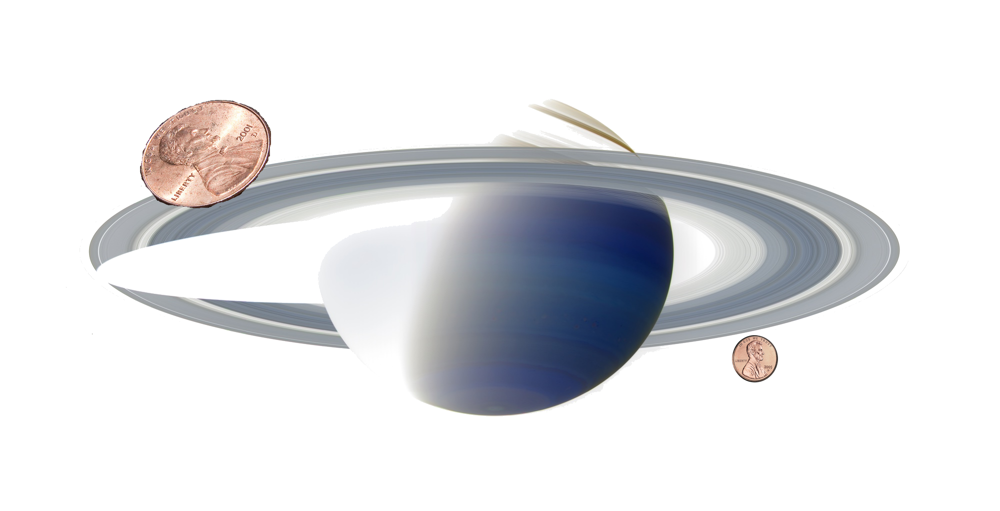

Books
Books that I have written.
Books that I have written.
Podcasts and Videos in which I have appeared or which I have created.
Dynamical systems simulation in Python. Includes both continuous and stochastic simulation.
An introductory stats book from a Bayesian perspective, including Python software.
I am a Scientist, Skeptic, and Professor at Bryant University. My goal is to make technical subject matters widely accessible and to use my analytical and computational skills to assist anyone with their science-related problems.


In his blog post, Chatbots are boring. They aren't AI., PZ Myers the professor of biology at the University of Minnesota Morris has this to say about chatbots and AI …
#articles

I heard a term yesterday that I hadn't every heard before, while listening to a very interesting interview/debate with Mike Licona on the Resurrection. The term is "naturalism of …
#articles

I just posted an 8-minute movie I made showing weather maps for 3 years from July 2011 to September 2014. These surface maps are archived at the Unisys Weather Image …
#articles
On a recent Unbelievable podcast there is a discussion between Calum Miller and James Croft on the topic "is our universe more likely on atheism or theism?", where Calum introduces …
#Unbelievable Project
On a recent Unbelievable podcast there is a discussion between Calum Miller and James Croft on the topic "is our universe more likely on atheism or theism?", where Calum introduces …
#Unbelievable Project
When challenging the bogus medical claims of herbalists, chiropractors, and homeopaths one is often countered with the question "what's the harm?" How could harm come from a treatment that, even …
#articles
I heard over the past couple of days the question being asked "what evidence would convince you that there is a God?", and the reverse (to a believer) "what evidence …
#articles

One of the standard climate blogs I read is Judith Curry's blog Climate Etc... I find that the topics she brings up, and the points she adds to it, are …
#articles

Today I gave a presentation on the general topic of "What is Science?" After some brief remarks about what science isn't and some of the factors (such as attitude) which …
#presentations
I was listening to the Unbelievable podcast debate between Tim McGrew and Peter Boghossian on the definition of faith, and whether it is a valid way of knowing. I have …
#Unbelievable Project
I was listening to the Unbelievable podcast debate between Tim McGrew and Peter Boghossian on the definition of faith and whether or not faith is a valid way of knowing …
#Unbelievable Project

Jake VanderPlas has what I believe is the clearest, and most thorough, take-down of the frequentist approach to statistical inference. It's in four parts, so far. The third part, in …
#articles
The moment we've been all waiting for, Statistical Heresies the movie is out! You can watch it in a couple of places:
#presentations
There has been an announcement that the Turing Test has finally been passed! So a computer has fooled humans into thinking that the computer is a human, as proposed in …
#articles

In the frustrating debate between Matt Dillahunty and Sye Ten Bruggencate, linked below, an "argument" is put forward that belief in God is reasonable. If you are unfamiliar with presuppositional …
#articles
I felt compelled to write this post, for some reason.
Reading an interesting article about free will has gotten me thinking about it again, despite the fact that doing so …
#articles

As part of the Unbelievable Project, I am taking notes and "arm-chair" responding to each of the Unbelievable podcast episodes satisfying a set of simple rules.
See here for a …
#Unbelievable Project
So I was sitting in the cafeteria the other day, and there was a clock which showed the wrong time and the second hand was being weird. I noted that …
#articles

I just added an example of simple model construction to my textbook, Statistical Inference for Everyone. It's a process I don't think I've ever seen in an intro stats book …
#projects
I'm giving a talk today, highlighting some of the current Bayesian/frequentist relationships as they relate to introductory statistics education. You can download the pdf here.
We live in a …
#presentations

I just finished listening to this excellent debate. I thought the proponents of dualism were credulous, and ignored the specific requests by the opponents to rule out alternatives. I'll get …
#articles

Gravitational Attraction
What would happen if two people out in space a few meters apart, abandoned by their spacecraft, decided to wait until gravity pulled them together? My initial thought was that …

A Simple Physics Problem Gets Messy
A physics problem from a practice AP test came to my attention, when my daughter was in AP physics this past spring. I went over her solutions when she did …

Skepticism and Dubious Medical Procedures
In my discussion with Jonathan McLatchie on the Still Unbelievable podcast, I said that there hasn’t been a verified miracle claim even since Hume’s essay on miracles. Here I look into the papers he references in response.
What problems are you interested in? How can I help?